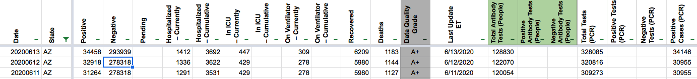

Arizona data wonky
State: [az]
Describe the problem data for arizona on 12 June is odd
‘totalTestResultsIncrease’->‘1654’ ‘date’->12 June 2020 (original date: 20200612) ‘positiveIncrease’->‘1654’
that means 100% of tests on 12 June were positive
Link to data source
saijanai added the label Data quality on June 21, 2020 at 3:27 pm
MattHilliard closed the issue on June 21, 2020 at 3:57 pm
saijanai commented on June 21, 2020 at 6:53 pm
Thanks. I was trying to plot ratio of positive tests to total tests as a percentage, and suddenly there’s this 100% bar in the middle of hte data…
Hmmm.
Hi @saijanai, thanks for reporting this issue. I’ve updated our number to make it as accurate as possible based on the data we have since AZ does not publish the relevant historical data. It should show up on the web site within an hour.
Details:
We calculate negatives for AZ by subtracting Positive Cases (PCR) from Total Tests (PCR). The “negative” value for 6/12 was 278318, which was the result of subtracting the previous day’s values for Positive Cases (PCR) and Total Tests (PCR): 309273-30955
The value based on those columns for 6/12 should be 320816-30955 = 289861. Unfortunately the Positive Cases (PCR) wasn’t updated from the previous day’s value due to technical difficulties with the Arizona data dashboard and it’s not visible in screenshots (confirmed cases are only shown in a hover tooltip), so this is going to be a small overestimate for negatives, but I think it’s still worth updating since it’s much closer to the true value than what we had before.
Before: 
After: